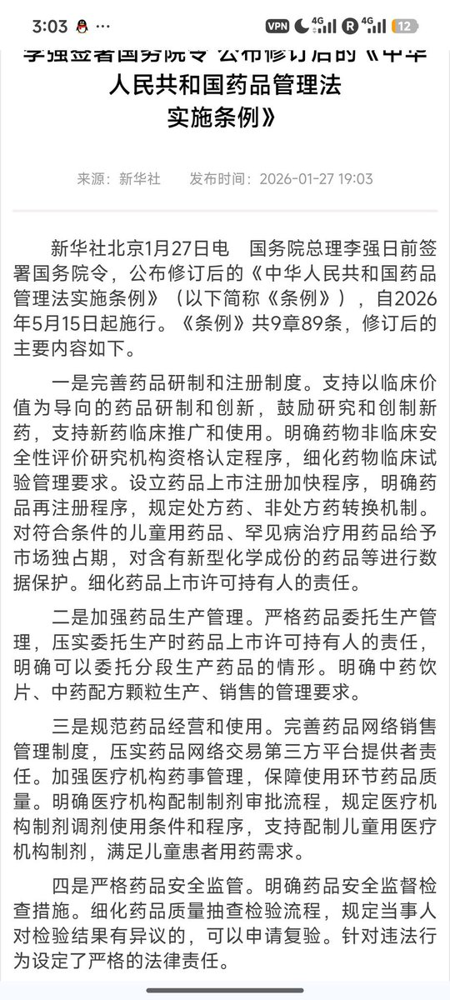

Cbscfe🍥
@Cbscfe
@sakuraiharunana 我只是发现我的平台突然变了，对不起

希澈希澈希澈澈澈澈澈
@sakuraiharunana
@Cbscfe 文件一月就发了，有一种糖商为了清库存的美感。
如果真的买不到了，四个月的时间，囤货早就囤到地球毁灭了。
你去街边药店买，人家才不管你男人女人变性人他，他们只在意有没有给你卖出高价保健品。
利益相关：我有 hrt 处方。 https://t.co/bdu9VaZ2Aq